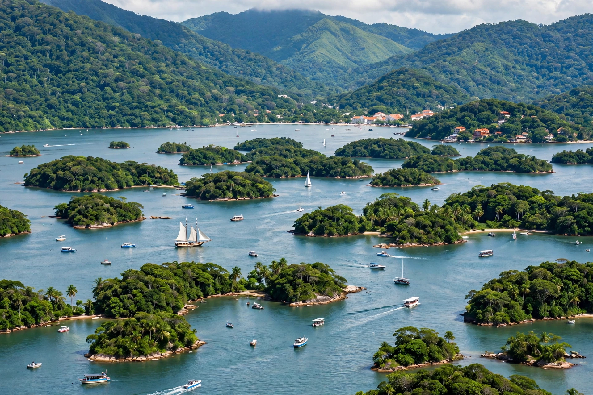

| Angra dos Reis | |
 | |
| Country | Brazil |
|---|---|
| State | Rio de Janeiro |
| Founded | 1502 (discovery); town founded 1556 |
| Area | about 816 km² |
| Population | about 210,000 |
Angra dos Reis ("Bay of the Kings") is a municipality in the state of Rio de Janeiro in southeastern Brazil. It is famous for its bay, which contains 365 islands — one for each day of the year, in local lore — and for the beaches and Atlantic Forest of the surrounding Costa Verde.
The bay was reached by a Portuguese expedition on 6 January 1502, the feast of Epiphany (Day of the Kings), which gave the place its name. The town grew as a port for the gold of Minas Gerais and later for coffee exports from the Paraíba valley.
The largest island in the bay is Ilha Grande, a former penal colony island now a protected area and popular ecotourism destination, part of a UNESCO World Heritage listing with Paraty. The Serra do Mar mountains drop steeply into the sea behind the town.
Angra dos Reis hosts Brazil's only nuclear power plant, the Admiral Álvaro Alberto plant with its Angra I, II and (under construction) III reactors. Shipbuilding, oil terminals, fishing and tourism are also important; the town is a popular weekend destination for residents of Rio de Janeiro.